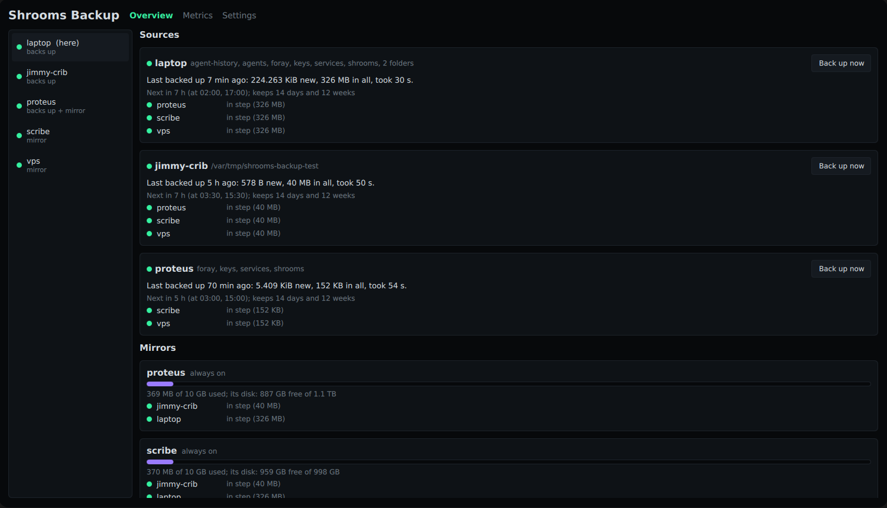

Your machines back each other up, over the mesh.
New, and being tested. It backs up its author's machines since November 2026. Restoring works from the command line; the apps cannot restore yet, and nothing tells you when a backup fails unless you look. Read what it does not do before trusting it with anything.

You already have several machines on one mesh: a desktop in the office, a box at home, a VPS. Shrooms Backup lets each one back itself up to the others you pick, with no cloud account and no backup service in between. The mesh does the finding: every machine running it is found on its own, from Basecamp or the phone, and the copies travel over the mesh's own encrypted links.
On each machine, with shrooms already installed and on the mesh:
curl -fsSLO https://raw.githubusercontent.com/vpavlin/shrooms-backup/main/scripts/install.sh
sudo bash install.sh --mirror --always-on # keeps copies for others
sudo bash install.sh --preset shrooms,keys --mirrors proteus,scribe # backs itself up
Then give a machine its key from the card, on a machine with a reader:
shrooms-backup key --keycard --machine NAME. Run the installer
again to update; it keeps what is set.
The apps — a Basecamp module, shrooms_backup with its
shrooms_backup_core, and an Android app — show every machine,
its runs and its copies, and change its settings from any device among
its owners. They are in the author's own repositories so far, not yet in
the public ones above; build them from
the repository.
Shrooms Backup is its own program, in its own repository, with its own apps: it uses the mesh the way any application does and nothing of shrooms' code. The network stays the boring part. Every decision behind it, with its reasons.
shrooms-backup restore --from MIRROR --target DIR on the
machine.